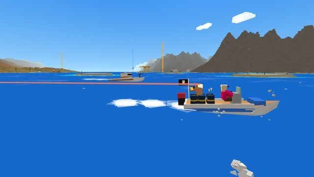

Featured · Playable

Co-op racing · Touch controls
Wadi Rush
Two players. One sandstorm.
A two-player rally through a Wadi Rum sandstorm. The driver follows the roadbook calls of a friend.
Original games built to be played. Cooperation, tension and a few unexpected ways to spend the next ten minutes.

SHT Games is the home for the full collection. Explore a game here, then head straight into its world.
Two players. One sandstorm.
A two-player rally through a Wadi Rum sandstorm. The driver follows the roadbook calls of a friend.
Most games are best with a desktop keyboard and mouse. Light Fingers and Wadi Rush also support touch controls.
Cross a foggy lake on floating platforms, remember the real ones, and pull your friends out before something beneath finds them.

An office full of identical people. Some are players, some are NPCs. Steal what you can and avoid the guard.

Repair the systems of a sealed station and find three keys while a creature follows the sound.

A crew-based browser game combining boat runs, upgrades and island building. Currently locked on SHT Games.
Horror titles include darkness, pursuit or sudden scares. Hormuz Run is currently locked.
Interactive experiences, a brand partnership, or an original game. Let’s explore what it could become.